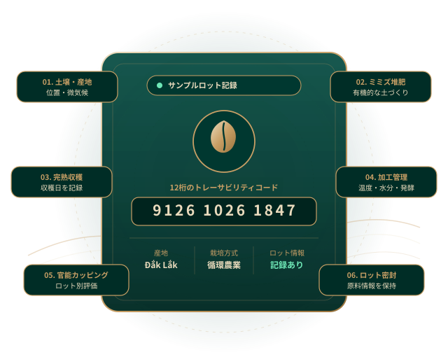
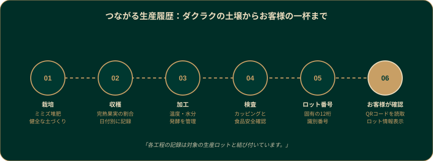

01
「純粋」と「欠点を隠すブレンド」のあいまいさ
ロット記録のないコーヒーやカカオには、古い原料や欠点のある原料が混ざる可能性があります。カカオでは色を濃くし、不快な酸味を隠す目的でアルカリ処理が行われることもあります。根拠となるデータがなければ、高い代金を払っても期待した自然な風味が得られないかもしれません。
考えられる影響：カカオのポリフェノールやフラバノールなどの天然成分、産地特有の香りが失われる可能性。
生産の各段階まで追跡できる農産物を選ぶことで得られる実質的なメリットを詳しくご紹介します。
コーヒーやカカオなどの農産物では、どんなパッケージにも「純粋」、「スペシャルティ」、「農場直送」と印刷できます。しかし、宣伝文句と確かな品質を分けるのは、手元の商品が栽培から加工までどのような道のりをたどったか、自分でさかのぼって確認できるかという点です。

以下のロット情報はトレーサビリティ情報の表示例であり、実際に検証された生産記録ではありません。実際の製品情報を確認するには、SI CAFE公式トレーサビリティサイトをご利用いただくか、製品に記載されたロット番号・追跡コードを以下に入力してください。
原産地情報が包装工程で途切れると、購入者は健康、味わい、予算を検証できない主張に委ねることになります。
ロット記録のないコーヒーやカカオには、古い原料や欠点のある原料が混ざる可能性があります。カカオでは色を濃くし、不快な酸味を隠す目的でアルカリ処理が行われることもあります。根拠となるデータがなければ、高い代金を払っても期待した自然な風味が得られないかもしれません。
収量優先の栽培では化学肥料や農薬への依存が高まる場合があります。焙煎後の製品を見たり嗅いだりするだけでは、その使用状況は分かりません。農場の記録や土壌管理情報がなければ、「クリーンな農産物」は検証されていない宣伝にとどまります。
シーズン初めの少量サンプルだけを検査し、その結果を一年を通じて集荷した大量の商品に適用する生産者もいます。ロット単位の追跡がなければ、手元の商品がどの製造分に属するか判断できません。
明確なロット識別がなければ、水分量、風味、保管品質の変化が収穫・加工・保管のどこで生じたか確認しにくくなります。本当の透明性とは、個々のロットについて生産者が責任を持つことです。
トレーサビリティは工場だけの技術ではありません。お客様の利益を守る仕組みであり、味わう体験を豊かにする手段です。
口コミやパッケージの華やかな説明だけに頼る必要はありません。12桁のコードを入力またはスキャンすると、ダクラクの栽培地域、収穫日、加工方法、記録された品質指標を確認できます。
Si Farm & Si Cafeでは原産地の透明性と循環農業を結びつけ、ミミズ堆肥による土づくりや生物的な管理方法を取り入れています。また、欠点を隠すための人工香料の添加やアルカリ処理を避けています。
ファインロブスタのロットが熟度95％超のチェリーから収穫され、温度管理された発酵と適切な高床乾燥を経たと知れば、長く続く甘みやダークチョコレート、ローストナッツ、熟した果実の風味をより深く理解できます。
家庭で淹れる方にも、カフェ経営者や飲食事業者にも、原料の性質が予告なく変わることは大きな課題です。ロット記録にある水分量、焙煎度、精製方法を参考にすれば、抽出条件を調整して品質を再現しやすくなります。
透明な記録により、完熟果実の選別収穫、循環型の土壌管理、フリーズドライや天然香気回収などの高度な加工、品質検査といった価値の源泉が見えてきます。
透明性の高い商品を選ぶことは、ダクラクの農家が責任ある栽培、土づくり、ミミズ堆肥による循環システムに投資し続けることを後押しします。企業向けの贈答品や来客への提供でも、ロットの追跡情報が丁寧さと責任感を伝えます。

Si Cafe & Si Farmの12桁のコード（例：9126 1026 1847）は、生産管理システムでのロット識別情報を表します。下の数字のグループを選び、それぞれの意味をご覧ください。
以下の比較表で、品質情報の示し方による違いと消費者にとっての利点をご確認ください。
| 比較項目 | 説明があいまいな製品 | Si Cafe & Si Farmの追跡可能な製品 |
|---|---|---|
| 原産地の証拠 | パッケージに「中部高原の特産品」や「100％純粋」など一般的な表現のみを記載。 | ロットごとに固有の12桁コードを付け、ダクラクの栽培記録に関連付けます。 |
| 栽培方法と土壌の栄養 | 農場記録がなく、化学肥料や農薬の使用状況を確認しにくい状態です。 | 健全な土壌環境を目指すSi Farmのミミズ堆肥循環農業を紹介します。 |
| 原料の真正性 | 古い原料や欠点のある豆の混合、色や香りを揃えるためのアルカリ処理・香料使用の可能性があります。 | 自然な色と香りを大切にし、ロット別の品質を記録する過度な処理を抑えた原料です。 |
| 品質評価データ | 何年も前の検査結果をすべての販売ロットの根拠として使っています。 | ロットごとに物性、水分量、精製工程、カッピングによる官能評価を記録します。 |
| 長期間の品質安定性 | 購入のたびに品質が変わっても原因を把握できません。 | ロットの特性を参考に抽出方法を調整し、安定した仕上がりを目指せます。 |
| 包装後の責任 | 販売後に情報が途切れ、品質変化の原因を遡れません。 | 栽培地からダクラク省Quảng Phúの施設を経て消費者へ届くまで、ロット単位で製品の履歴を追跡します。 |
消費者、抽出の専門家、企業パートナーから寄せられる実際の質問にお答えします。
偽造防止ラベルは主にパッケージが特定ブランドのものかを確認するためのものです。原料の栽培地、収穫日、加工方法まで分かるとは限りません。一方、12桁のトレーサビリティコードは、対象ロットの栽培地、ミミズ堆肥による管理、収穫記録、加工条件、官能評価を結び付けることを目的としています。
これは農産物が持つ自然なばらつきを反映している可能性があります。日照、降雨、成熟度、微気候は時期によって変わります。ロット別の記録は、すべての商品に同じ説明を使うのではなく、その違いを明らかにします。
カカオパウダーには、色を濃くし酸味を抑えるためアルカリ処理（ダッチプロセス）を行うものが多くあります。この工程で天然のフラバノールやポリフェノールが減少する場合があります。天然カカオのロット記録から、発酵、焙煎条件、非アルカリ処理の有無、ダクラク産カカオの風味特性を確認できます。
はい。スマートフォンで包装のQRコードを読み取ると、そのロットの?lot=...パラメーターが付いたURLに移動できます。あるいはラベルの12桁の数字を直接入力し、開封前に提供されている情報を確認できます。